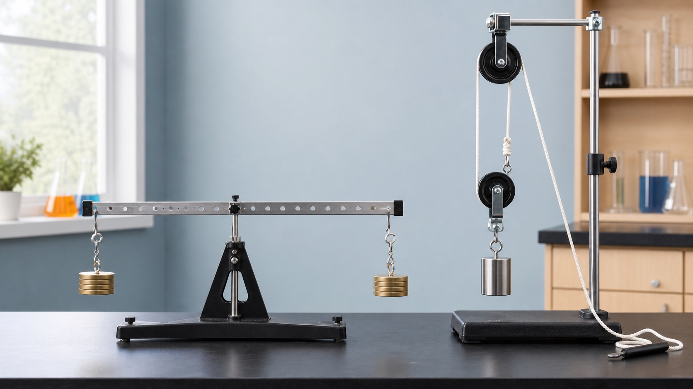

下册 · 第十二章 · 简单机械
省力不等于省功
杠杆和滑轮能改变力的大小或方向，但任何机械都不能省功；真实机械还会因额外功而使效率低于 100%。
知识桥梁
把力、距离和功放进同一个机械
简单机械通过改变力和距离来方便工作，评价它既要看省不省力，也要看做了多少有用功。
第 1 节
杠杆：先找支点，再画力臂
杠杆平衡时，两侧力矩相等：F₁l₁ = F₂l₂。
杠杆五要素
- 支点 O
- 绕着转动的固定点
- 动力 / 阻力
- 促使 / 阻碍转动
- 动力臂 / 阻力臂
- 支点到作用线的垂距
- 平衡
- 两侧力矩相等
力臂不是“杆长”
- 找出支点 O。
- 沿力的方向画出力的作用线，必要时延长。
- 从支点向作用线作垂线，垂线段才是力臂。
- 比较 l₁ 与 l₂，判断省力、费力或等臂杠杆。
- 省力
- l₁ > l₂，省力但费距离。
- 费力
- l₁ < l₂，费力但省距离。
什么时候杠杆能平衡？
作用点与箭头同步变化所需动力 F₁40.0 N
第 2 节 · 跨学科实践
制作简易杆秤：刻度从平衡条件中来
杆秤把杠杆平衡转化为可读取的质量刻度；制作时要经历组装、调零、标定和检验。
四步完成标定
- 组装：秤杆、提纽、秤盘和秤砣连接牢固。
- 调零：空秤时移动秤砣，使秤杆水平。
- 标定：放入已知质量，标出秤砣平衡位置。
- 检验：用不同已知质量复测量程和准确性。
模型假定空秤已经调零。实际杆秤中，秤杆和秤盘自重都要在调零时校正。
移动秤砣，读懂刻度
秤砣 100 g · 秤盘臂 10 cm秤砣到支点距离20.0 cm
第 3 节
滑轮：关键是数承重绳段
不要只数轮子；应数直接承担动滑轮和物重的绳段数 n，理想情况下 F = G / n、s = nh。
三种装置的代价
- 定滑轮
- n = 1，不省力，能改变施力方向，s = h。
- 动滑轮
- 理想情况下 n = 2，省一半力，但 s = 2h。
- 滑轮组
- F = G / n、s = nh，可兼顾省力和改变方向。
公式是理想模型，实际还要克服动滑轮重、绳重和摩擦。
轮子怎样组合，才能更省力？
忽略绳重、摩擦和动滑轮重承重绳段 n = 4理想拉力 100 N拉力方向 向下拉
图中 1-4 四段绳直接承担动滑轮组和物重；重物升高 h 时绳端移动 4h。
第 4 节
机械效率：有用功占总功的比例
总功等于有用功与额外功之和；真实机械有摩擦、自重等额外功，因此效率小于 100%。
同步测量四个量
- 有用功：W有 = Gh。
- 总功：W总 = Fs。
- 机械效率：η = W有 / W总 × 100%。
- 有 3 段绳承重时，绳端移动距离 s = 3h。
- 应在缓慢、连续拉动过程中读取拉力 F。
测量滑轮组的机械效率
3 段绳承重有用功 0.90 J总功 1.08 J
机械效率83.3%
第十二章检查
能综合判断省力和效率了吗？
完成 12 题，检查杠杆实验、滑轮组和机械效率。